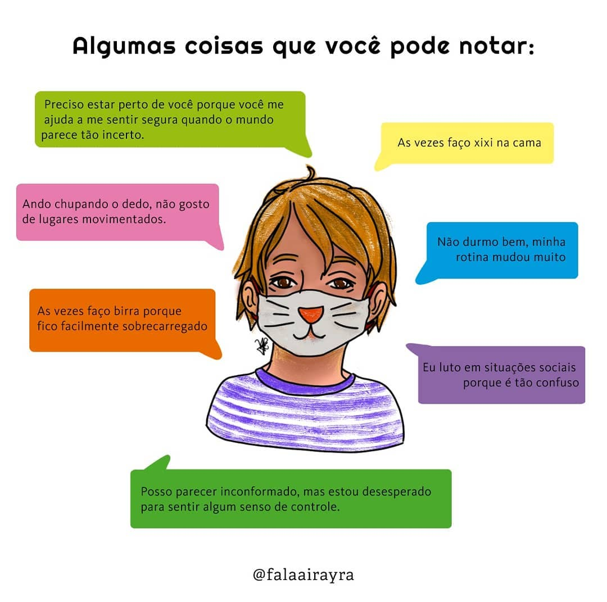

Atualmente estamos vivendo uma crise mundial em decorrência ao novo coronavírus, uma das medidas tomadas para enfrentamento foi o distanciamento e isolamento social. Até onde se sabe no momento, a saúde da criança é menos afetada pelo novo coronavírus em comparação a dos adultos , porém, o desenvolvimento e saúde mental das crianças no contexto da pandemia com o distanciamento ou isolamento social deve ser um ponto de atenção.
Distanciamento social: as crianças não estão frequentando a escola, um dos contextos essenciais ao desenvolvimento e aprendizagem, isso gera privação da necessária socialização com os pares e causa perda de experiências lúdicas compartilhadas, por exemplo: atividades de cooperação; convivência com as diferenças; compartilhamento de decisões; enfrentamento de desafios; negociação de conflitos; adiamento de gratificações; espera da sua vez; exercício controle de impulsos.
 Emoções e comportamentos que podem ocorrer: distração, irritabilidade, agitação, apego excessivo aos pais, pesadelos, falta de apetite, medo de fazer perguntas sobre a pandemia, medo dos familiares ficarem doentes.
Atitudes que podem ser adotadas: os pais ficarem atentos às dificuldades dos filhos, estabelecer uma comunicação aberta e conversar sobre os medos e preocupações que possam existir, promover jogos colaborativos e atividades.
Fontes auxiliares: DUTRA;CARVALHO;SARAIVA (2020)
COMPARTILHE se achou importante essa informação 🌻
Ilustração: Yael Costa
#pandemia #psicologiainfantil #psicologia #psicologiaclinica #psicoterapia #lockdown